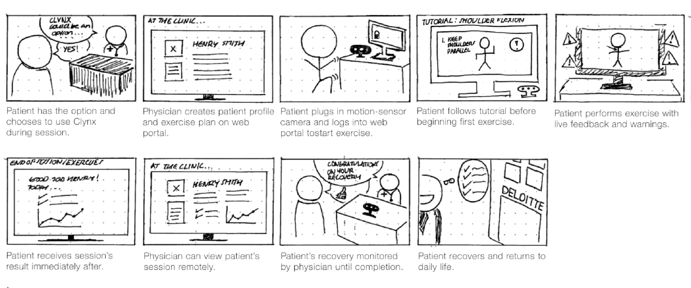
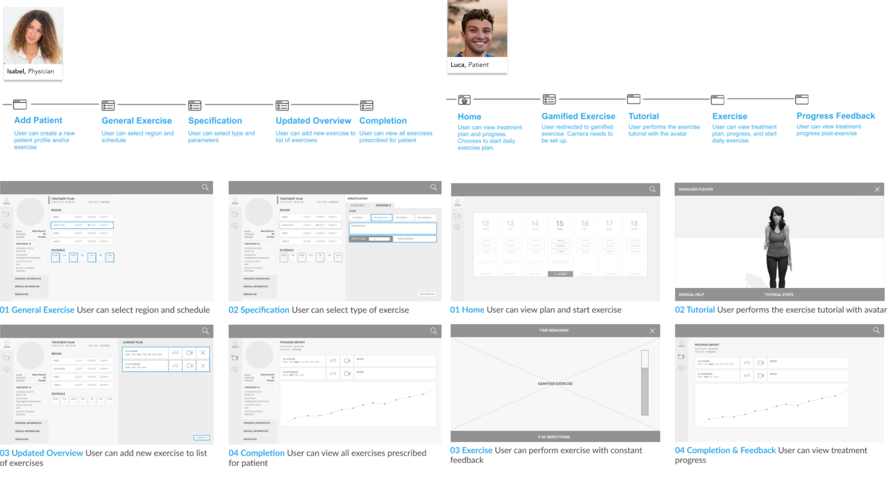

INTERACTION DESIGN ・ FALL 2018
Clynx is a healthcare technology startup I co-founded with four team members based in Lisbon, Portugal. Our solution utilizes gamification and digitalization to help physical therapy patients recover faster.
I designed the desktop MVP for the dashboard experience to help patients perform exercises and physicians to monitor therapy progress.
MY ROLE
Solo UX Designer–discovery, user research, competitive audit, testing, feature prioritization, product strategy
MY CONTRIBUTIONS
TEAM
IMPACT
PROBLEM
In physical therapy, the recovery process requires home exercises beyond in-clinic sessions — failure to keep us slows down recovery and can lead to future recurring injuries.
Patients who perform home exercises often perform exercises incorrectly and over time lack motivation. Physical therapists struggle to help patients who miss sessions and fail to perform the exercise recommendations.
We had an idea — create a gamified physical therapy exercise to help patients recover faster.
The team conducted 22 user research interviews on physical therapy patients, including both existing and past patients. Splitting our team into two groups, we conducted 1:1 interviews in two major cities in Portugal–Lisbon and Cascais. Below are our key findings from the commonalities shared by interviewees:
INSIGHTS FROM PATIENTS
Lack of motivation to perform physical therapy exercises
Distrust around the process and frustration over lack of transparency
INSIGHTS FROM PATIENTS
Unable to monitor patients outside of in-clinic therapy sessions
Delayed recovery and recurring injuries due to patient’s not abiding to the plan
Although the end-user is a patient, our subsequent 6+ interviews with physicians heightened the critical role each play for a patient's smooth recovery. We found specific stages in the recovery progress, including the diagnosis, and injury severity, to require the in-person expertise of a physician. This fundamental understanding not only informed my design process for the MVP but later informed Clynx's business model from a B2C to a{" "} B2B2C model.
“I have no idea if therapy even helps...honestly, I don’t actually do the exercises at home, but I stopped because I did not notice any improvements.”
LUCA, AN ONGOING PHYSICAL THERAPY PATIENT INTERVIEWED OUTSIDE A CLINIC IN CASCAIS
As a concept development tool, I used storyboarding to to visualize how patients and physicians, would utilize two aspects of the solution – the web portal and gamified exercise. Through this sprint activity, I gained clarity on how my design will engage users, and aligned on the potential solution with my team.
I created high-fidelity functional wireframes with Adobe InDesign. Below is a snippet of the desktop experience for two user flows: patients and physicians.
At the clinic, the physician creates the patient profile on the portal and prescribes the treatment plan including the type of exercise, repetition, and other parameters.{" "}
Exercise selection displays the game visually with customized instructions to prevent injuries.
Parameters customized for every patient (ie. range of motion) to maintain performance accuracy without constant monitoring.
The patient downloads the portal and sets up the body sensor camera to a computer to begin the exercises. Our software does not require any wearables, since the camera is able to detect the body and create a virtual model.
Point system to encourage patients to perform the exercises accurately and work towards a goal.
Bar represents the current range of motion compared to the parameter goal set by the physician.{" "}
The physician can access the portal remotely to monitor the patient’s treatment. Additionally, the patient can also access the portal to view the progress over each session and communicate with the physician.
The progress report tracks the range of motion, speed, and reaction time.
Graph results of 3 different parameters across the period of a day, week, month, or year.
This project has grown much more than the initial idea we formed. In August 2018, Clynx was awarded as one of the most promising top 10 Health Startups in Europe, by EITHealth at the InnoStars Awards Competition. We received a $10K grant and incorporated in Portugal. In early 2019, we began our beta testing phase with one of the clinics at CUF, the largest hospital chain across Portugal, and other private clinics in Lisbon.
I’m immensely grateful to my team and mentors I’ve found along the way. Working closely with our PM and engineers, I learned how valuable understanding the business goals and technical limitations while designing has on the long term value of the solution. Currently, I am still the sole designer at Clynx and am excited to work on the end-to-end user experience further!